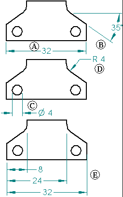
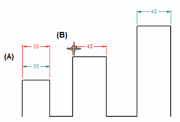
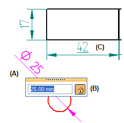

Dimensions
You can add dimensions to the 3D PMI model or 2D design geometry by measuring characteristics such as size, location, and orientation of elements. You can measure the length of a line, the distance between points, or the angle of a line relative to a horizontal or vertical orientation. Dimensions are associative to the 3D model or 2D elements to which they refer, so you can make design changes easily. Solid Edge provides a full complement of dimensioning tools so you can document your parts, assemblies, and drawings.
To learn about placing and editing dimensions on the 3D model, see PMI dimensions and annotations.
In the Draft environment, you can add dimensions using the commands in the Dimension group on the Home tab or the Sketching tab. You also can create dimensions by retrieving them from part, sheet metal, and assembly models with the Retrieve Dimensions command.
Here is an example showing the types of dimensions you can place:
-
(E) Dimension groups

These dimension commands are available:
-
For length, angle, radius, and diameter dimensions:
-
For ordinate dimensions:
Each dimension command has a command bar that sets options for placing the dimension. When you select an existing dimension, the same command bar is displayed so you can edit the dimension characteristics.
Placing dimensions
To add dimensions to elements, you can use a dimension command, such as Smart Dimension, and then select the elements you want to dimension.
As you add dimensions, the software shows a temporary, dynamic display of the dimension you are placing. This temporary display shows what the new dimension will look like if you click at the current cursor position. The dimension orientation changes depending on where you move the cursor.
For example, when you click the Distance Between command and select an origin element (A) and an element to measure to (B), the dimension dynamically adjusts its orientation depending on where you position your cursor (C) and (D).

Because you can dynamically control the orientation of a dimension during placement, you can place dimensions quickly and efficiently without having to use several commands. Each of the dimension commands uses placement dynamics that allow you to control how the dimension will look before you place it.
You also can place dimensions automatically as you draw. For more information, see Adding dimensions automatically.
When you select following dimensions, the corresponding faces to which they relate are highlighted:
-
Linear dimensions (created on parallel faces)
-
Radial and diameter dimensions (created on holes, cylindrical cutouts, and protrusions—bores and shafts)
-
Angular dimensions
-
Symmetric diameter dimensions
Using dimensions to control elements
You can place a dimension that controls the size or location of the element that it refers to. This type of dimension is known as a driving dimension. If you change the dimensional value of a driving dimension, the element updates to match the new value.

The value of a driven dimension is controlled by the element it refers to, or by a formula or variable you define. If the element, formula, or variable changes, the dimensional value updates.
Because both driving and driven dimensions are associative to the element they refer to, you can change the design more easily without having to delete and reapply elements or dimensions when you update the design.
For more information about driving dimensions and dimension locking and unlocking, see Using driving dimensions to control elements.
Dimension color
Driving and driven dimensions are distinguished by color. The default colors are different in the synchronous modeling environments than they are in the Draft environment.
In the Draft environment:
-
The default color for driving dimensions—Black/White—is set by the Driving Dimension option.
-
The default color for driven dimensions—Dk Cyan—is set by the Driven Dimension option.
The color defined for each dimension type is part of the dimension style, which you can edit using the Styles command on the View tab in the Style group. In the draft environment, you can change the default color for driving and driven dimensions on the General page of the Modify Dimension Style dialog box.
In the modeling environments, the default colors for driving and driven dimensions are set by the Handle and the Driven options on the Colors tab (Solid Edge Options dialog box).
Snapping to keypoints and intersection points
When placing a dimension, you can use shortcut keys to select and snap to keypoints or intersections. After you locate the line, circle, or other element that you want to snap to, you can press one of these shortcut keys to apply the point coordinates to the command in progress: M (midpoint), I (intersection point), C (center point), and E (endpoint).
To learn more, see Selecting and snapping to points.
Making dimension lines collinear and concentric
You can drag an existing dimension so that it snaps into alignment with another dimension.
-
As you drag a linear dimension (A), you can locate another dimension to display a dotted alignment indicator (B). When you release the mouse button, the first dimension snaps into collinear alignment with the second.

-
You can use the same technique to move a radial dimension so that it snaps into concentric alignment with another radial dimension.
Aligning dimension text and leader break points
You can use the Line Up Text command to align dimensions by their dimension text, using alignment and justification options you select on the Line Up Text command bar. Two other options on the command bar align linear dimensions using the leader break points instead of the dimension text.
Placing dimensions with the dimension axis
The Dimension Axis command sets the orientation of the dimension axis on the drawing sheet or profile plane. You can use the new dimension axis, rather than the default axis of the drawing sheet or profile plane, while you use the Distance Between or Coordinate Dimension commands. After you define the dimension axis, you can place dimensions that run parallel to or perpendicular to the dimension axis.
Placing dimensions between drawing views
You can add dimensions that measure the true distance between edges in different views of the same model, such as between a principal view and a detail, cropped, or broken view.
In addition to being of the same model, the drawing views must share the same view plane and view rotation angle. For example, you can add a dimension between an edge in a front view and an edge in a detail view with the same front orientation, but not between a front view and a side view.
You can:
-
Place dimensions between drawing views using any of the commands that measure distance or angle between two elements.
-
Select edges, center marks, bolt hole circles, centerlines, sheet metal bend lines, tube centerlines, keypoints, and hidden lines within the drawing views for dimension placement.
Dimensioning with a grid
You can easily create and align dimensions using a grid and the Snap To Grid options on the Grid options dialog box. You can snap to a grid point or to a grid line.
While modifying an existing dimension, you can select any part of the dimension—line, text, or handle—and drag it, and it will snap into position. When you turn off the grid, you turn off the snap-to-grid feature.
Editing 2D dimensions
Depending on the dimension type (model-derived, synchronous sketch, ordered profile, or draft), its behavior (driven or driving), and where you click, a single click can display all of the dimension editing functions, or display only the dimension value edit box. You also can use Alt+click to get the opposite behavior.
In the Draft environment:
-
When you click the dimension text of a model-derived dimension, the dimension formatting command bar is displayed. If you click the dimension text again, you can modify the dimension value (A).
-
When you click the dimension text for a dimension placed on 2D drawing elements, then both the dimension formatting and dimension value can be edited at once.
-
If a dimension was created as a driving dimension, the lock icon (B) is displayed.
-
If you override a dimension value retrieved from the model, the not-to-scale symbol is displayed (C).

For more information, see Edit a 2D dimension (sketch, profile, draft).
Formatting dimensions
If you want two or more dimensions to look the same, you can select the dimensions and apply a style with the command bar. If you want to format dimensions so that they look unique, you can select a dimension and edit formats with the command bar or the Properties command on the shortcut menu.
To learn how to format dimension terminators, see Set terminator size and shape.
You can add prefix, suffix, superfix, and subfix text and supplementary information to a dimension value using the options in the Dimension Prefix dialog box. You can use this dialog box while you place or edit a dimension. To learn how, see Add and edit dimension text.
Copying dimension data
In the Solid Edge Draft environment, you can copy data such as prefix strings, dimension display types, and tolerance strings from one dimension to another. You also can copy the style properties associated with a dimension or annotation to another dimension or annotation using the Copy Attributes command.
Setting or modifying units of measure
You can set the units of measure for a dimension by selecting the dimension and using the Properties command on the shortcut menu. You can set the units of measure for a document using the File menu→Info→File Properties command.
Tracking changed dimensions and annotations
When a drawing view is updated in the Solid Edge Draft environment, you can track dimensions and annotations that have been changed or deleted from the model. To open the Dimension Tracker dialog box so you can identify these changes, use the Tools tab→Assistants group→Track Dimension Changes command.
-
On the drawing, every changed dimension and annotation is flagged by a balloon.
-
In the Dimension Tracker dialog box, changed items are displayed in columnar format. You can sort the changes by clicking a column heading.
-
You can select one or more items in the list and assign a revision name to the balloon labels on the drawing.
To learn more, see Tracking dimension and annotation changes.